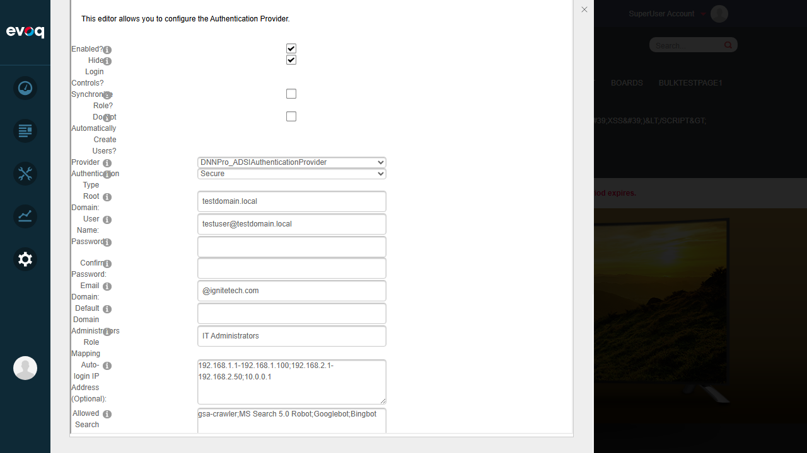
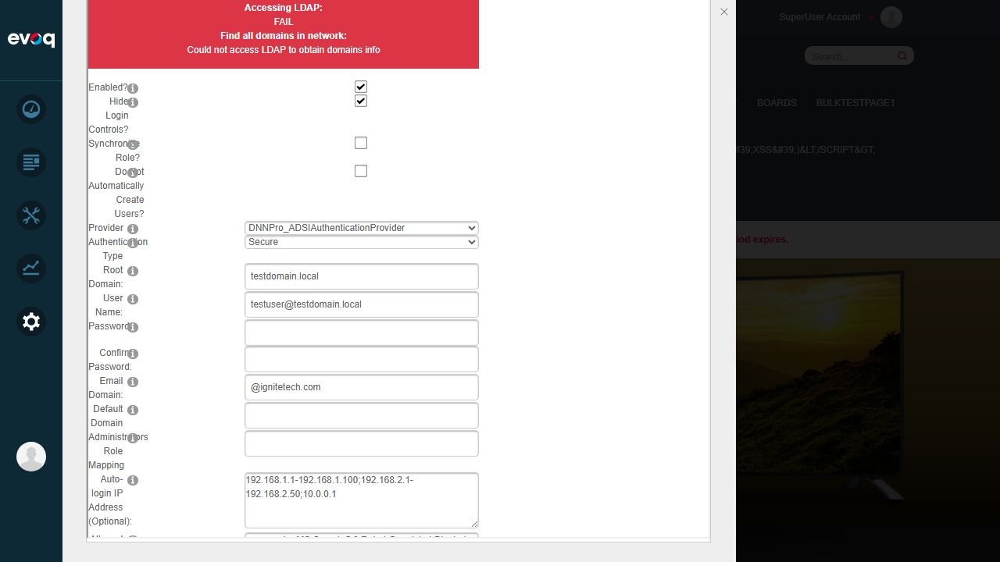
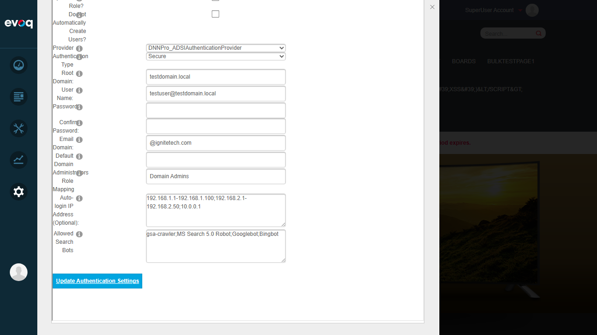

Map Active Directory groups to DNN administrator role
UI Location
Settings > Extensions > Authentication Systems > DNNPro_ActiveDirectoryAuthentication > Site Settings > Administrators Role Mapping
Test Date
2026-01-06
Test Summary
Test Case
Status
Configure AD group for admin mapping
PASS
Empty input validation
PASS
Restore original value
PASS
Overall Result: 3 PASS / 0 FAIL
Test Cases
Test 1: Configure AD Group for Admin Mapping
Objective: Verify that an AD group name can be configured for administrator role mapping.
Steps:
Navigate to Settings > Extensions > Authentication Systems
Select DNNPro_ActiveDirectoryAuthentication and click edit
Click on "Site Settings" tab
Locate the "Administrators Role Mapping" field (initially shows "Domain Admins")
Change the value to "IT Administrators"
Click "Update Authentication Settings" to save
Verify the new value is persisted
Expected Result: The AD group name should be saved and displayed correctly.
Actual Result: The value "IT Administrators" was successfully saved. LDAP validation messages appeared (expected in test environment without real AD server).
Status:PASS
Screenshots:
Initial state - Administrators Role Mapping field with "Domain Admins":
New value entered - "IT Administrators":

Settings saved successfully:
Test 2: Empty Input Validation
Objective: Verify the behavior when the Admin Role Mapping field is cleared and saved.
Steps:
Clear the "Administrators Role Mapping" field (remove all text)
Click "Update Authentication Settings" to save
Verify whether empty values are accepted or if validation occurs
Expected Result: The system should either accept empty values (disabling the feature) or show validation message.
Actual Result: Empty values are accepted and saved without validation errors. This is correct behavior - when empty, no AD group is mapped to admin role (feature is effectively disabled).
Status:PASS
Screenshots:
Field cleared (empty):

Empty value saved successfully:
Test 3: Restore Original Value
Objective: Verify that the original value can be restored and saved correctly.
Steps:
Enter "Domain Admins" in the "Administrators Role Mapping" field
Click "Update Authentication Settings" to save
Verify the original value is persisted
Expected Result: The original value "Domain Admins" should be restored and saved.
Actual Result: The value "Domain Admins" was successfully restored and saved.
Status:PASS
Screenshots:
Original value restored:

Observations
LDAP Connection Validation: When saving settings, the system attempts to validate the AD connection. In the test environment (without a real AD server), LDAP connection tests fail with messages like "Accessing Global Catalog: FAIL", "Checking Root Domain: FAIL", "Accessing LDAP: FAIL". This is expected behavior and settings are still saved correctly.
Code Implementation: Based on code review:
Configuration.cs:74 - The adminRoleMapping field stores the AD group name
Configuration.cs:133 - Loads from portal setting AD_AdminRoleMapping
Configuration.cs:284 - Saves using PortalController.UpdatePortalSetting
UserController.cs:182-186 - Uses the mapping during role synchronization: if user belongs to the mapped AD group, they get the DNN admin role
UserController.cs:212-230 - ManageAdminRoleMapping method handles adding/removing admin role based on AD group membership
Feature Behavior: The Admin Role Mapping feature allows specifying a single AD group name. Users who are members of this AD group will automatically be assigned the DNN Administrator role when logging in via Active Directory authentication (if role synchronization is enabled).
Untestable Scenarios (No Real AD Server):
Login with user in admin-mapped AD group - Cannot test without real AD infrastructure
Verify administrator role assignment - Requires actual AD authentication
Remove user from AD admin group and verify role removal - Requires AD infrastructure
Test with multiple admin groups - Code suggests only single group is supported
Verify super user permissions are preserved - Requires login testing
Technical Notes
The Admin Role Mapping feature is implemented through the following key components:
Configuration Storage: The value is stored as a portal setting with key AD_AdminRoleMapping
Role Assignment Logic: During AD user login, if role synchronization is enabled and the user belongs to the mapped AD group, they are automatically added to the DNN Administrator role
Role Removal: If the user is removed from the AD group, they are also removed from the DNN Administrator role on next login
Single Group Support: The current implementation supports mapping only one AD group to the admin role